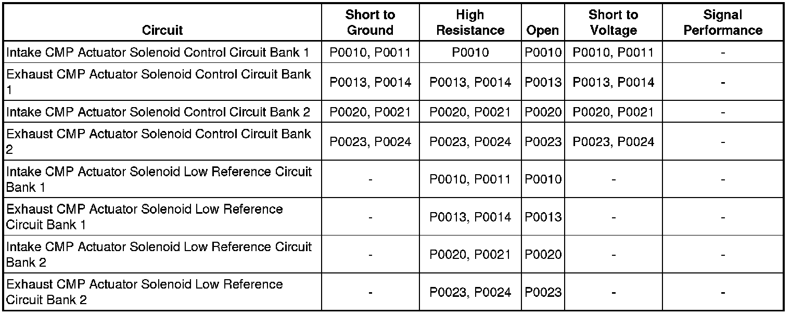

P0014
DTC P0011, P0014, P0021, or P0024
Diagnostic Instructions
* Perform the Diagnostic System Check - Vehicle (Initial Inspection and Diagnostic Overview) prior to using this diagnostic procedure.
* Review Strategy Based Diagnosis (Initial Inspection and Diagnostic Overview) for an overview of the diagnostic approach.
* Diagnostic Procedure Instructions (Initial Inspection and Diagnostic Overview)provides an overview of each diagnostic category.
DTC Descriptors
DTC P0011
- Intake Camshaft Position (CMP) System Performance Bank 1
DTC P0014
- Exhaust Camshaft Position (CMP) System Performance Bank 1
DTC P0021
- Intake Camshaft Position (CMP) System Performance Bank 2
DTC P0024
- Exhaust Camshaft Position (CMP) System Performance Bank 2
Diagnostic Fault Information

Circuit/System Description
The camshaft position (CMP) actuator system is comprised of 4 CMP actuator solenoids, 4 oil control valves, and 4 CMP actuators. The engine control module (ECM) sends an electrical signal to the CMP actuator solenoids through the control circuits when a camshaft timing change is desired. The ground circuits of the CMP actuator solenoids are used as a return. The CMP actuator solenoid uses electromagnetic force to pull on the plunger of the oil control valve. The oil control valve will port the pressurized engine oil to either the advancing or retarding chambers of the CMP actuator. The CMP actuator, in turn, changes the CMP relative to the crankshaft position (CKP). If the desired CMP does not match the actual CMP for a calibrated amount of time.
Conditions for Running the DTC
* DTCs P0010, P0011, P0013, P0014, P0016, P0017, P0018, P0019, P0020, P0021, P0023, P0024, P0335, P0336, P0340, P0341, P0345, P0346, P0365, P0366, P0390, P0391, P2088, P2089, P2090, P2091, P2092, P2093, P2094, P2095 are not set.
* The CMP actuators are commanded.
* The engine oil pressure (EOP) is between 100-696.4 kPa (14.5-101 psi).
* The engine speed is at an RPM between 1,000-6,500 RPM, that will allow for steady activation of the cam actuators based on calculated engine oil temperature (EOT).
* The calculated EOT is between -10 to +150°C (+14 to +302°F).
* The ignition voltage is between 9-18 volts.
* DTC P0011, P0014, P0021, or P0024 runs continuously when the above conditions are met.
Conditions for Setting the DTC
The ECM detects the difference between the desired camshaft position and the actual camshaft position angles is more than 6 degrees for more than 1.6 seconds.
Action Taken When the DTC Sets
DTCs P0011, P0014, P0021, and P0024 are Type B DTCs.
Conditions for Clearing the MIL/DTC
DTCs P0011, P0014, P0021, and P0024 are Type B DTCs.
Reference Information
Schematic Reference
Engine Controls Schematics (Electrical Diagrams)
Connector End View Reference
Component Connector End Views (Connector Views)
Description and Operation
* Camshaft Actuator System Description (Camshaft Actuator System Description)
* Lubrication Description (Description and Operation)
Electrical Information Reference
* Circuit Testing (Component Tests and General Diagnostics)
* Connector Repairs (Component Tests and General Diagnostics)
* Testing for Intermittent Conditions and Poor Connections (Component Tests and General Diagnostics)
* Wiring Repairs (Component Tests and General Diagnostics)
DTC Type Reference
Powertrain Diagnostic Trouble Code (DTC) Type Definitions (Diagnostic Trouble Code Descriptions)
Scan Tool Reference
Control Module References (Programming and Relearning)for scan tool information
Circuit/System Verification
1. Observe the engine oil level. The engine oil level should be within the operating range on the oil indicator stick.
2. Start the engine; allow the engine to reach normal operating temperature.
3. Using the scan tool monitor the engine oil pressure parameter value. The engine oil pressure must be at or above the minimum hot oil pressure values. Refer to Engine Mechanical Specifications (Specifications) .
4. Using the output control function of the scan tool, command the CMP actuator solenoid to 20 degrees. The CMP Desired parameter value should match the CMP Angle parameter value.
5. Observe the CMP Variance value, on the scan tool. The CMP Variance value will increment for several seconds, until the CMP Angle value matches the Desired CMP value. The CMP Variance value should then return to zero degrees.
6. Operate the vehicle within the Conditions for Running the DTC. You may also operate the vehicle within the conditions that you observed from the Freeze Frame/Failure Records data.
Circuit/System Testing
Important: You must complete the Circuit/System Verification before proceeding with Circuit/System Testing.
Important: Incorrect engine oil viscosity, aftermarket engine oil additives, or engine oil that overdue for changing, can greatly affect the performance of the camshaft actuator.
1. Disconnect the appropriate cam sensor connector.
2. Test for less than 1 ohm of resistance between the low reference circuit terminal A and ground.
• If greater than 1 ohm, test the low reference for an open/high resistance. If the circuit tests normal replace the ECM.
3. Test for less than 1 ohm of resistance on the control circuit.
• If greater than 1 ohm, test the control circuit for an open/high resistance. If the circuit tests normal replace the ECM.
4. Inspect the CMP actuator. Refer to Camshaft Position Actuator Housing Cleaning and Inspection () .
5. Inspect the engine timing components. Refer to Camshaft Timing Drive Chain Alignment Diagram (Locations) .
Component Testing
Static Test
1. Ignition OFF, disconnect the appropriate CMP actuator solenoid harness connector at the CMP actuator solenoid.
2. Test for 4.8-5.2 ohms of resistance at 25°C (77°F) between the control terminal B and the low reference terminal A of the CMP actuator solenoid.
• If the resistance is not within the specified range, replace the CMP actuator solenoid.
Dynamic Test
Important: Do not allow the solenoid to be energized for more than 2 seconds.
1. Install fused jumper wire between the control terminal B and 12 volts. Install a jumper wire between the low reference terminal A and momentarily connect to ground.
2. Listen for the solenoid to click.
• If the function does not perform as specified, replace the CMP actuator solenoid.
Repair Instructions
Perform the Diagnostic Repair Verification (Verification Tests) after completing the diagnostic procedure.
* Control Module References (Programming and Relearning)for ECM replacement, setup, and programming
* Camshaft Position Actuator Solenoid Valve Solenoid Replacement - Bank 1 (Right Side) Intake (Camshaft Position Actuator Solenoid Valve Solenoid Replacement - Bank 1 (Right Side) Intake)
* Camshaft Position Actuator Solenoid Valve Solenoid Replacement - Bank 1 (Right Side) Exhaust (Camshaft Position Actuator Solenoid Valve Solenoid Replacement - Bank 1 (Right Side) Exhaust)
* Camshaft Position Actuator Solenoid Valve Solenoid Replacement - Bank 2 (Left Side) Intake (Camshaft Position Actuator Solenoid Valve Solenoid Replacement - Bank 2 (Left Side) Intake)
* Camshaft Position Actuator Solenoid Valve Solenoid Replacement - Bank 2 (Left Side) Exhaust (Camshaft Position Actuator Solenoid Valve Solenoid Replacement - Bank 2 (Left Side) Exhaust)
* Camshaft Timing Drive Components Cleaning and Inspection ()